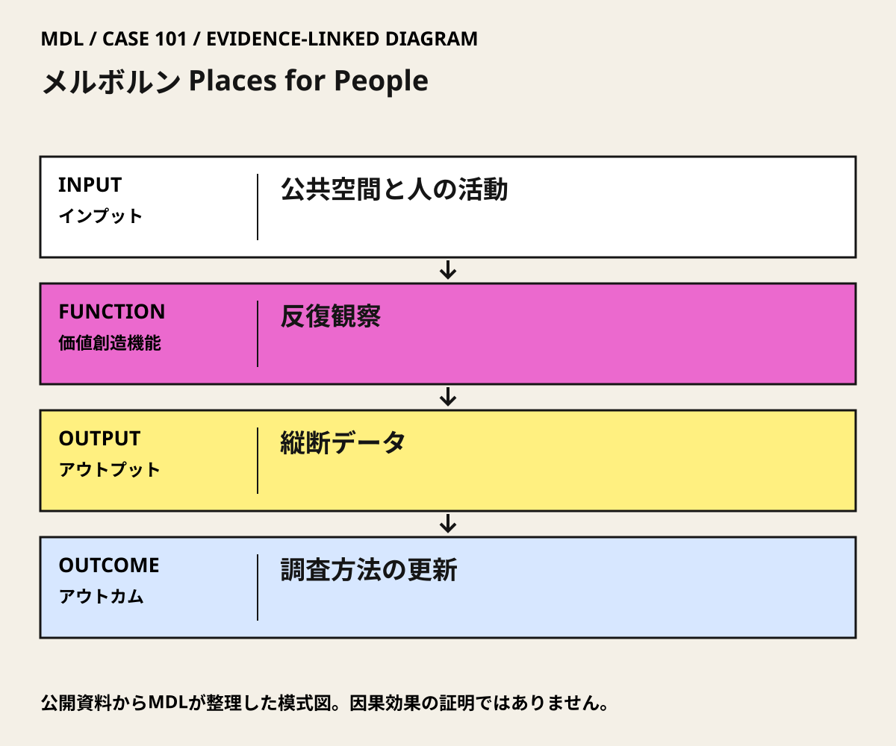

I / INPUT
何を持ち込んでいるか。
活動の出発点となる資源と課題を分けて整理します。「自社」は、その場・制度を運営する組織を指します。
II / VALUE CREATION FUNCTIONS
資源を、どう価値へ変えるか。
以下は既存の8ステップへの編集上の対応づけです。各取り組みの公式な工程名や、全工程を自前で担うことを意味しません。
III / OUTPUT
直接、何が生まれたか。
試作品、データ、契約、標準、育成した人材など、活動から直接生まれたもの。
初回・再調査の報告と、地区・時期を比較するデータ。
公開資料で確認出典 1
IV / OUTCOME
その結果、何が変わったか。
実際の利用、行動、業務、事業、地域の変化。報告された変化と、当該活動に帰属できる効果は区別します。
観察と提言を繰り返す仕組みが、2015年の調査方法の更新につながった。
公開資料で確認出典 1個別整備・Gehlの助言が生活の質をどれだけ改善したかは、ここで示す資料だけでは切り分けられない。
公開資料では未確認
PROJECT IN FOCUS / 具体的な事例
メルボルン Places for People
確認できた段階：公共空間・公共生活の縦断調査と計画提言 調査確認日 2026-10-06
誰の課題を、どう扱ったか
生まれたもの
初回・再調査の報告と、地区・時期を比較するデータ。
確認できた変化
観察と提言を繰り返す仕組みが、2015年の調査方法の更新につながった。
評価の限界：調査対象範囲と時期の違いを無視して成長率を比較しない。人数増には人口・就業・用途の変化も関わる。人の多さだけで居やすさや公平性を保証せず、2015年版を本人の単独成果としない。
DESIGN BACKWARDS FROM IMPLEMENTATION
社会実装から逆算して、
何を先に整えているか。
実証の先にある導入・運用・継続から、この事例の設計を読み解きます。原典で確認できる仕組みと、MDLの設計解釈・他地域へ応用するための提案を区別して読んでください。「提案」「未実施」と記す内容は、当地で実施済みの工夫ではありません。仕組みの存在と、全案件で成果が出たことも別に扱います。
MORE DETAIL / 運営・根拠・応用
運営の全体像と、学びを深める資料。
費用負担、公表値、応用条件、写真・動画、原典を続けて確認できます。
01どう動かしているのか。
公共空間の形と通行・滞在を繰り返し観察し、提言と変化を照合。後の版では、人数だけで測れない生活の質を認め、土地利用や日常サービスへの到達性も調査に加えた。
意思決定と本人の関与：市の計画・整備に使う証拠をつくる調査。個別事業の採択、予算、許認可の判断をGehlが一括して持つわけではない。 Jan Gehlは市との公共生活調査・提言・2004年再調査に関与。2015年版すべての著者、全整備の設計者という意味ではない。
- 公共生活を観察する
- 同じ場所を測り直す
- 限界から次の調査を組み立てる
02誰が負担し、誰が担うか。
調査費と個別整備費の総額、委託契約・負担割合は未確認。
制度やプログラムの財源と、各参加企業・地域に発生する費用は同じではありません。公開範囲を超える案件別予算・契約条件は未確認です。
03確認できたこと。
04日本で活かすなら。
十年ごとの調査間隔をそのまま移すのでなく、日常の判断に必要な間隔で測り直す。観察指標が何を取りこぼすかを毎回点検する。
05そのまま真似できないこと。
調査対象範囲と時期の違いを無視して成長率を比較しない。人数増には人口・就業・用途の変化も関わる。人の多さだけで居やすさや公平性を保証せず、2015年版を本人の単独成果としない。
06次に、何を確かめるか。
提案・未実施：提案・未実施：一つの中心街路で、現状・休息場所の追加・案内改善を比べ、事前と試行後に同条件で観察する。
担い手：自治体の公共空間担当が調査継続、管理者が維持、当事者団体が利用障壁の確認を担う。
測るもの：通行・滞在に加え、目的地への到達、利用しない理由、休息しやすさ、管理時間を記録。
継続：人数と生活上の使いやすさが両立し、アクセス格差を広げない。
修正：人数だけ増え、非利用者の障壁が残るなら配置・時間・対象を変更。
停止：管理不能や重大な通行障害が残る。
07写真・図と原資料で確かめる。
現場の写真を見る ↑
DIAGRAM: モビリティデザインラボ · 根拠資料 ↗
図の説明
公開資料に基づく模式図。公共空間と人の活動 → 反復観察 → 縦断データ → 調査方法の更新。実景や地理的配置を示さない。
2026-10-06 · MDL作成の説明図。第三者の写真・図面の複製ではありません。
冒頭写真：飲食店、屋外の席、歩行者が集まるメルボルンのデグレーブス・ストリート
原資料で、当時の調査・実践を読む ↗08原典を読む。
Places for People Strategy 2015, Part 1 ↗
Gehlの1993・2004年関与、縦断調査、2015年の方法拡張
市の戦略報告全文PDF公開・英語。2026-10-06確認。
Jan Gehl on Why Tall Buildings Aren’t Necessarily Bad for Street Life ↗
活動を起点に空間を考える本人の説明
本人インタビュー本文公開・英語。2026-10-06確認。
Gehl側の研究と著作の来歴
事務所の沿革本文公開・英語。独立した効果評価ではない。2026-10-06確認。